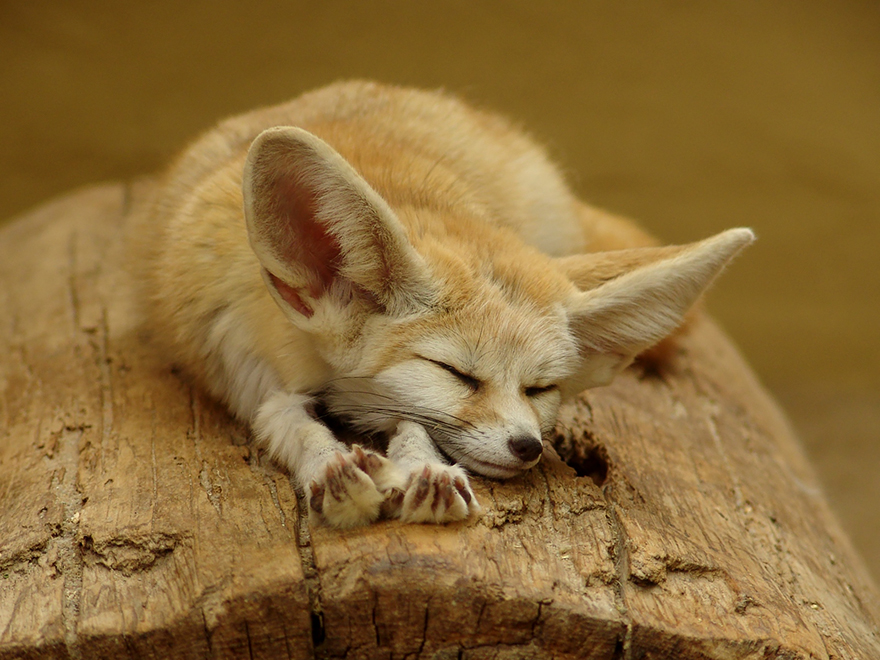
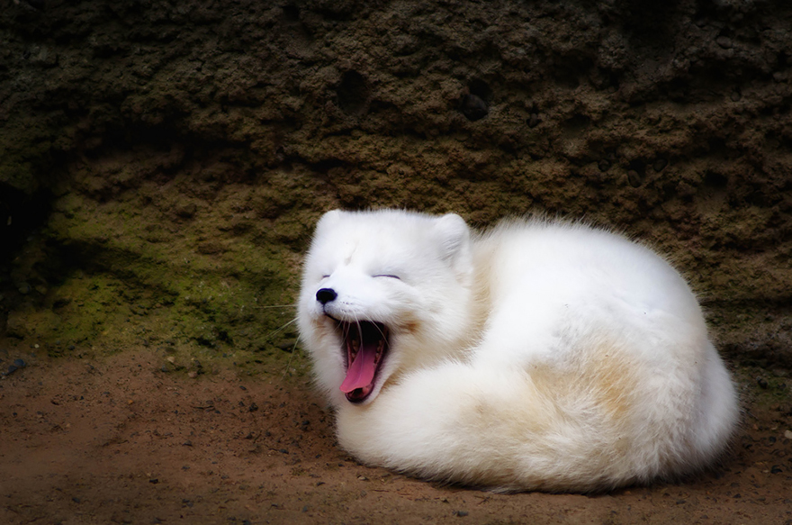
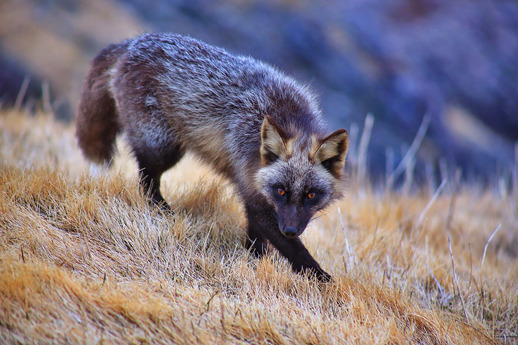
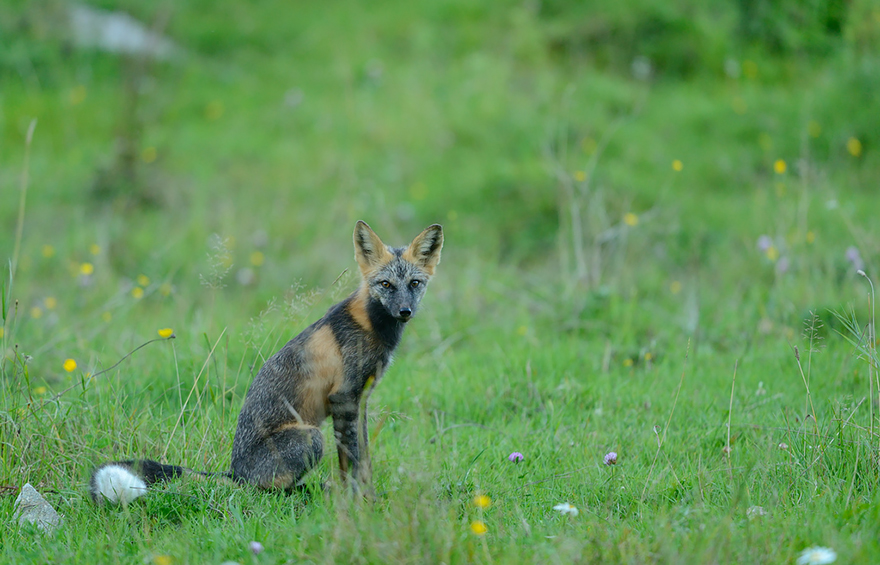

The Six Types of Foxes
By Ankita Kar
(Join our Mailing List)
↓
|
Name |
Photo |
Description |
Link to Information |
| Fennec Fox |

|
Fennec foxes, native to North Africa and the Sahara desert, are distinguished by their large ears, which serve to dissipate their body heat. These ears give them such good hearing that they can even hear their prey moving under the sand. Their cream-colored fur helps them deflect heat during the day and stay warm at night. |
National Geographic Website
|
| Arctic Fox |

|
The arctic fox can be found throughout the Arctic Circle. Their thick fur keeps them from shivering in temperatures as low as -70 degrees Celsius (-94 Fahrenheit). These foxes have relatively short legs and snouts, which helps keep their surface area down and retain heat. |
National Geographic Website
|
| Red Fox |

|
The red fox is the largest, most wide-spread and, as a result, the most diverse species of all the foxes. They can be found throughout the Northern Hemisphere and in Australia as well. They are very agile hunters and have been known to jump over 2m tall fences. |
National Geographic Website
|
| Silver Fox |

|
The silver fox is actually the same species as the red fox – they simply have different pigmentation variations. The silver fox was, at on time, one of the most valuable fur foxes that could be found. They are still bred and farmed for their fur. |
Wikipedia
|
Gray Fox |
|
The gray fox, which lives throughout North America, is distinguished by its “salt-and-pepper” upper coat and black-tipped tail. This fox is one of the only canids capable of climbing trees. |
Wikipedia
|
| Cross Fox |

|
The cross fox is yet another color variant of the red fox. It is most common in North America. |
Wikipedia
|
|
This webpage is designed and constructed by Ankita Kar
|